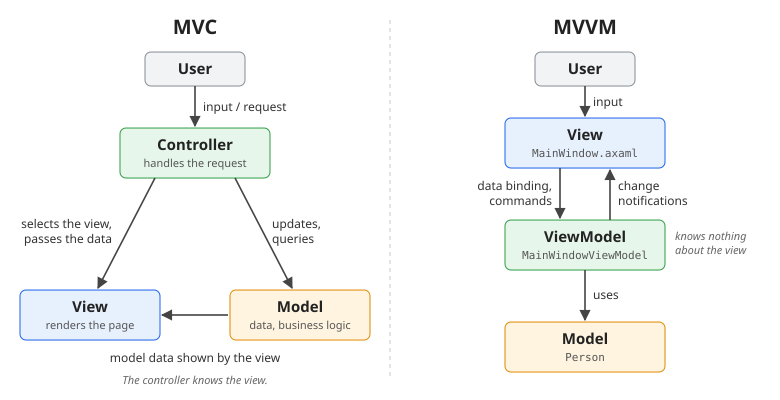

4 Data Binding and MVVM
In HelloAvalonia, every change of the state needed a line like CounterText.Text = "Counter: " + _counter;. Forget it once, and the screen shows old data. Data binding connects a control property to a data property, and keeps the two in sync automatically. On top of it sits the MVVM pattern, which this course uses from now on.
The labs have two parts. In the first, you rebuild HelloAvalonia with MVVM as HelloMvvm. In the second, you build DatabindingDemo, a list of people with a detail form.
4.1 Data binding
A binding connects a target, a property of a control, with a source, a property of some object. The target must be a styled property (chapter Avalonia Basics); every property of the built-in controls that you would want to bind is one.
You have met bindings already, with another element as the source:
<TextBox Name="TBRight"/>
<TextBox Text="{Binding #TBRight.Text}"/>4.1.1 Binding modes
| Mode | Direction |
|---|---|
OneWay |
source → target: the control shows the value |
TwoWay |
source ↔︎ target: the control shows the value, and user input changes it |
OneTime |
source → target, once, when the binding is created |
OneWayToSource |
target → source only |
You rarely set a mode yourself. Properties that users edit (TextBox.Text, CheckBox.IsChecked, Slider.Value, ListBox.SelectedItem, …) default to TwoWay, all others to OneWay. User input is written to the source immediately, on every keystroke.
4.2 View models and the DataContext
MVVM (Model-View-ViewModel) splits an application into three parts:
- the View: the window, its XAML and a minimal code-behind,
- the ViewModel: a plain C# class holding the state of the view and the actions on it, as properties and commands. It knows nothing about windows or controls,
- the Model: the data and business logic behind it.
The view finds its view model through the DataContext. Set it once, usually in the window’s constructor:
public MainWindow()
{
InitializeComponent();
DataContext = new MainWindowViewModel();
}The DataContext is inherited by every control inside the window. A binding without a # source then refers to a property of the view model: {Binding Name}.
Two more lines belong in every window that uses a view model:
<Window ...
xmlns:vm="using:HelloMvvm"
x:DataType="vm:MainWindowViewModel">
<Design.DataContext>
<vm:MainWindowViewModel/>
</Design.DataContext>x:DataTypetells the compiler the type of theDataContext. The bindings are then compiled: a misspelled property name is a build error (AVLN2000), not an empty text box at runtime.Design.DataContextgives the previewer an instance to show, because it can’t run the window’s constructor.
4.3 Change notification
Typing in the text box does set Name: the binding writes every keystroke into the view model. But nobody tells the TextBlock that Greeting has changed. The binding read it once, when the DataContext was set, and has no reason to read it again.
A view model announces changes with the interface INotifyPropertyChanged, which consists of a single event. Every binding subscribes to it, and re-reads its property when the event names it. Written by hand, every property needs this:
public class MainWindowViewModel : INotifyPropertyChanged
{
private string _name = "";
public string Name
{
get => _name;
set
{
if (value == _name) return;
_name = value;
PropertyChanged?.Invoke(this, new PropertyChangedEventArgs(nameof(Name)));
PropertyChanged?.Invoke(this, new PropertyChangedEventArgs(nameof(Greeting)));
}
}
public event PropertyChangedEventHandler? PropertyChanged;
}4.3.1 CommunityToolkit.Mvvm
The NuGet package CommunityToolkit.Mvvm writes this code for you, with a source generator that runs at build time:
public partial class MainWindowViewModel : ObservableObject
{
[ObservableProperty]
[NotifyPropertyChangedFor(nameof(Greeting))]
private string _name = "";
}ObservableObjectimplementsINotifyPropertyChanged.[ObservableProperty]on the private field_namegenerates the public propertyName, including the notification. You write the field, but use the property.[NotifyPropertyChangedFor(nameof(Greeting))]additionally announces a change ofGreetingwheneverNamechanges.- The class must be
partial: the generator writes the other half, like the XAML compiler does for a window. In Rider, Go to Declaration onNameshows the generated code.
To run your own code when a property changes, add a method with a special name; the generator calls it after every change:
partial void OnNameChanged(string value) => Console.WriteLine($"Name is now {value}");The toolkit also allows [ObservableProperty] on a property instead of a field (public partial string Name { get; set; }). You will see that form in later exercises; this book uses the field form.
4.4 Two-way binding
Input controls bind TwoWay by default, so the user can change any view model property directly: the text of a TextBox, the value of a Slider, the state of a CheckBox. The same property can be bound to several controls at once, and they all stay in sync.
A bool property can also switch a style class, as in the chapter Styles:
<TextBlock Text="{Binding Greeting}" Classes.bold="{Binding IsGreetingBold}"/>4.5 Commands
Buttons in a view model world don’t call Click handlers; they execute commands of the view model. [RelayCommand] on a method generates a command property with the method name plus Command:
[RelayCommand]
private void IncrementCounter() => Counter++;<Button Content="Increment" Command="{Binding IncrementCounterCommand}"/>A command can decide whether it may run. The button is disabled while it may not:
[ObservableProperty]
[NotifyCanExecuteChangedFor(nameof(ResetCounterCommand))]
private int _counter;
[RelayCommand(CanExecute = nameof(CanResetCounter))]
private void ResetCounter() => Counter = 0;
private bool CanResetCounter() => Counter > 0;[NotifyCanExecuteChangedFor] tells the command to ask CanResetCounter again whenever Counter changes.
A command method can also take a parameter, which the button passes with CommandParameter:
[RelayCommand]
private void IncrementBy(int amount) => Counter += amount;<Button Content="+5" Command="{Binding IncrementByCommand}">
<Button.CommandParameter>
<x:Int32>5</x:Int32>
</Button.CommandParameter>
</Button>Watch out: CommandParameter="5" looks the same, but passes the string "5". The command expects an int, so it refuses to run, and the button stays disabled without any error message. <x:Int32> creates a real number.
4.6 What stays in the code-behind
MVVM doesn’t mean that every button must be a command. Showing a dialog or closing the window needs the window itself, which the view model deliberately doesn’t know. These actions stay in the code-behind. The code-behind may read the view model when it needs data from it:
var viewModel = (MainWindowViewModel)DataContext!;The rule of thumb: state and logic go into the view model, things that only concern the window stay in the view.
4.7 MVVM compared with MVC
From web development you know MVC (Model-View-Controller), the pattern behind ASP.NET Core MVC, Spring MVC or Ruby on Rails. Both patterns separate the data (model) from its presentation (view). They differ in what sits between the two, and in how the view is kept up to date.

MVC. Every input, in the web a request, goes to a controller. It updates or queries the model, selects a view and passes it the data to show. The view renders it, in the web as a new HTML page. The controller knows the view; the view is output only.
MVVM. The input goes to the view: the controls themselves. They pass it on to the view model through data binding and commands. The view model holds the state and knows nothing about the view: it only announces that something has changed, and the bindings update the controls. Instead of rendering a new page per request, the view stays open and follows the view model continuously.
| MVC | MVVM | |
|---|---|---|
| Receives the input | Controller | View; bindings and commands forward it |
| Who knows the view | The controller selects and fills it | Nobody; the view binds to the view model |
| Updating the display | The controller renders a view, in the web a new page per request | Bindings react to change notifications, continuously |
| State | Mostly per request, the server stays stateless | Long-lived, in the view model |
| Glue code between view and logic | Written in the controller | Provided by the data binding framework |
| Testing without a UI | Controllers, with request and response objects | The view model is a plain class: direct unit tests |
| Typical for | Server-side web applications | Desktop and mobile UIs: Avalonia, WPF, .NET MAUI |
Front-end frameworks such as Angular and Vue are closer to MVVM than to MVC: a component class holds the state, and its template binds to it.
4.8 Lists
To show a list, bind the ItemsSource of a ListBox to a collection. When items are added or removed later, the list must be told, just like a single property. That’s what ObservableCollection<T> does: it announces every change of the collection. Changes inside an item, like a new name, are announced by the item itself, so the item class is an ObservableObject, too.
public partial class Person : ObservableObject
{
[ObservableProperty]
private string _firstName = "";
[ObservableProperty]
private string _lastName = "";
[ObservableProperty]
[NotifyPropertyChangedFor(nameof(IsFullOfAge))]
private DateTime _birthDate;
public bool IsFullOfAge => DateTime.Today.AddYears(-18) >= BirthDate;
}public static class PersonRepository
{
public static ObservableCollection<Person> GetDummyPeople() => new()
{
new Person { FirstName = "John", LastName = "Doe", BirthDate = new DateTime(1975, 1, 1) },
new Person { FirstName = "Jane", LastName = "Roe", BirthDate = new DateTime(1980, 3, 1) },
new Person { FirstName = "Lisa", LastName = "Doe", BirthDate = new DateTime(2015, 1, 1) },
};
}The view model exposes the collection as a property:
public ObservableCollection<Person> People { get; } = PersonRepository.GetDummyPeople();4.9 Data templates
A data template describes how to show an object of a certain type. For the items of a list, it is the ItemTemplate:
<ListBox ItemsSource="{Binding People}">
<ListBox.ItemTemplate>
<DataTemplate x:DataType="vm:Person">
<StackPanel Orientation="Horizontal" Spacing="5">
<TextBlock Text="{Binding FirstName}"/>
<TextBlock Text="{Binding LastName}"/>
</StackPanel>
</DataTemplate>
</ListBox.ItemTemplate>
</ListBox>Inside the template, the DataContext is the item, so {Binding FirstName} is the first name of this person. x:DataType makes these bindings compiled, too.
StringFormat formats a value with a .NET format string:
<TextBlock Text="{Binding BirthDate, StringFormat='{}{0:dd.MM.yyyy}'}"/>The {} at the start is needed because the format itself starts with a {; without it, the XAML parser would take {0:dd.MM.yyyy} for a markup extension.
A template can also be stored as a resource with an x:Key and used in several places, for example to show a single object with a ContentControl:
<ContentControl Content="{Binding SelectedPerson}"
ContentTemplate="{StaticResource PersonTemplate}"/>4.10 Master/detail
A list and a form that edits the selected entry is called master/detail. It needs one more view model property for the selected item, bound to the list’s SelectedItem:
[ObservableProperty]
private Person? _selectedPerson;<ListBox ItemsSource="{Binding People}" SelectedItem="{Binding SelectedPerson}"/>The form binds through that property with a path: {Binding SelectedPerson.FirstName}. Because Person announces its changes, editing the name in the form updates the list entry at the same time.
As long as nothing is selected, the form should be hidden. A converter turns the selected person into a bool; Avalonia has a ready-made one for this check:
<StackPanel IsVisible="{Binding SelectedPerson, Converter={x:Static ObjectConverters.IsNotNull}}">4.11 Styling items by their data
The chapter Styles switched a style class with a check box. The same works with a property of the data, inside a data template. The ! in front of a path negates a bool:
<StackPanel Orientation="Horizontal" Spacing="5" Classes.underage="{Binding !IsFullOfAge}"><Style Selector="StackPanel.underage">
<Setter Property="Background" Value="LightCoral"/>
</Style>Now everything fits together. A command that changes a person’s birth date sets the property BirthDate. The generated setter announces BirthDate and, because of [NotifyPropertyChangedFor], IsFullOfAge. The formatted birth date and the highlighted row update on their own, without knowing about each other and without any refresh code.
🎯 Goal. People under 18 are highlighted, and a button makes the selected person one year older.
Add
Classes.underageto the template’sStackPaneland theStackPanel.underagestyle to<Window.Styles>, as shown above.On your own: add a command
MakeOneYearOlderthat moves the selected person’s birth date one year back (BirthDate.AddYears(-1)). It may only run while a person is selected. Add a button Make one year older at the end of the detail form.
✅ Check. Lisa’s row is red. Select her and click Make one year older a few times: her birth date moves back, and when she turns 18 the red disappears.

4.12 Try it yourself
- HelloMvvm: add a Shout check box that shows the greeting in capital letters.
- HelloMvvm: add a -5 button using the same
IncrementByCommand. - DatabindingDemo: add an Add person button that adds a new, empty person to
Peopleand selects it, and a Remove button for the selected person. - DatabindingDemo: replace the detail form with a
ContentControland a keyedDataTemplate, as shown in the section Data templates. What happens to the form when nothing is selected?